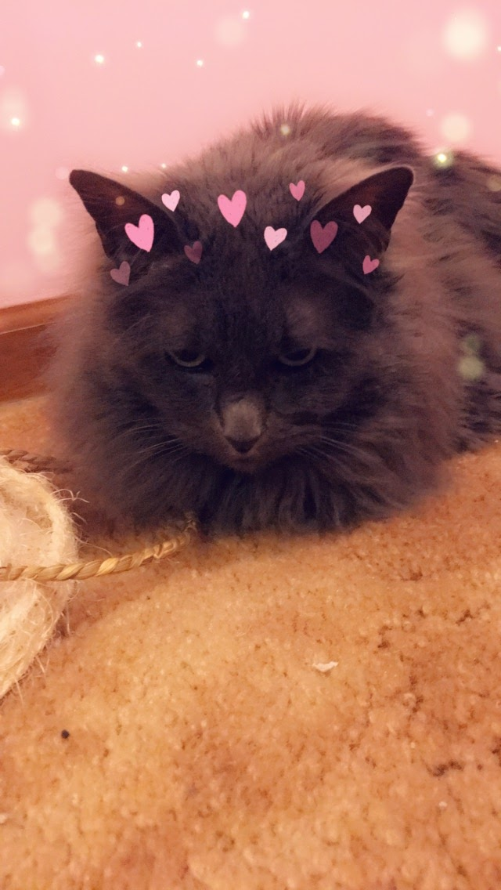

Ruth Higgason
Email:rhiggason@ku.edu
I am a sophmore working towards a computer science degree with a certificate in cybersecurity.
To deal with the stress of school I have a cat at home that I love very much. Her name is shadow.

One of my favorite games to play in-between classes is the offline T-Rex game.
Some of my favorite videos to put on in the background while I'm working on homework are the old pink panthers.
Here is a video of pink panther that I would put on while working.